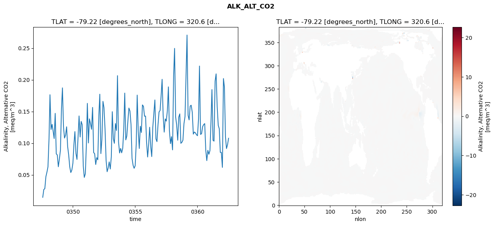
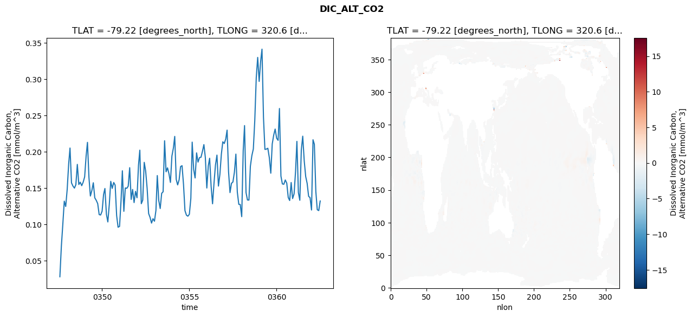
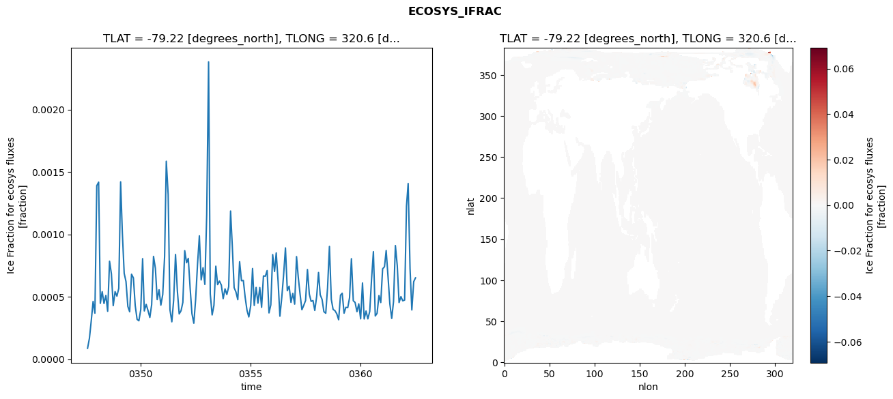
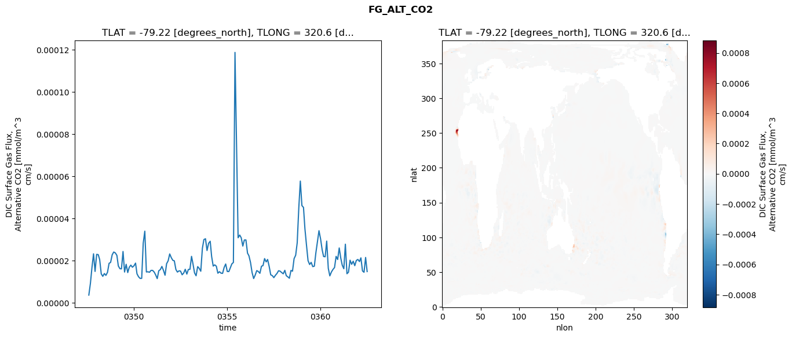

glb-dor_North_Atlantic_basin_013_1999-07-01_00054#
Simulation details#
Case: smyle.cdr-atlas-v0.glb-dor_North_Atlantic_basin_013_1999-07-01_00054.001
Basin: North_Atlantic_basin
Polygon: 13.0
Start date: 1999-07
Show code cell source Hide code cell source
import xarray as xr
import matplotlib.pyplot as plt
Show code cell source Hide code cell source
zarr_store = "/path/to/zarr/store"
# Parameters
zarr_store = "/global/cfs/projectdirs/m4746/Projects/Ocean-CDR-Atlas-v0/data/validation/smyle.cdr-atlas-v0.glb-dor_North_Atlantic_basin_013_1999-07-01_00054.001.validation.zarr"
Show code cell source Hide code cell source
%%time
ds_o = xr.open_zarr(zarr_store).compute()
ds_o
CPU times: user 669 ms, sys: 436 ms, total: 1.11 s
Wall time: 1.32 s
<xarray.Dataset> Size: 2MB
Dimensions: (nlat: 384, nlon: 320, time: 180)
Coordinates:
TLAT float64 8B -79.22
TLONG float64 8B 320.6
ULAT float64 8B -78.95
ULONG float64 8B 321.1
* time (time) object 1kB 0347-08-01 00:00:00 ... 0362-07-01 0...
z_t float32 4B 500.0
Dimensions without coordinates: nlat, nlon
Data variables:
ALK_ALT_CO2_diff (nlat, nlon) float32 492kB nan nan nan ... nan nan nan
ALK_ALT_CO2_rmse (time) float64 1kB 0.01453 0.02683 ... 0.09766 0.1078
DIC_ALT_CO2_diff (nlat, nlon) float32 492kB nan nan nan ... nan nan nan
DIC_ALT_CO2_rmse (time) float64 1kB 0.02768 0.06966 ... 0.1189 0.1321
ECOSYS_IFRAC_diff (nlat, nlon) float32 492kB nan nan nan ... nan nan nan
ECOSYS_IFRAC_rmse (time) float64 1kB 8.683e-05 0.0001671 ... 0.0006518
FG_ALT_CO2_diff (nlat, nlon) float32 492kB nan nan nan ... nan nan nan
FG_ALT_CO2_rmse (time) float64 1kB 3.645e-06 9.213e-06 ... 1.479e-05xarray.Dataset
- nlat: 384
- nlon: 320
- time: 180
- TLAT()float64-79.22
- long_name :
- array of t-grid latitudes
- units :
- degrees_north
array(-79.22052261)
- TLONG()float64320.6
- long_name :
- array of t-grid longitudes
- units :
- degrees_east
array(320.56250892)
- ULAT()float64-78.95
- long_name :
- array of u-grid latitudes
- units :
- degrees_north
array(-78.95289509)
- ULONG()float64321.1
- long_name :
- array of u-grid longitudes
- units :
- degrees_east
array(321.12500894)
- time(time)object0347-08-01 00:00:00 ... 0362-07-...
- bounds :
- time_bound
- long_name :
- time
array([cftime.DatetimeNoLeap(347, 8, 1, 0, 0, 0, 0, has_year_zero=True), cftime.DatetimeNoLeap(347, 9, 1, 0, 0, 0, 0, has_year_zero=True), cftime.DatetimeNoLeap(347, 10, 1, 0, 0, 0, 0, has_year_zero=True), cftime.DatetimeNoLeap(347, 11, 1, 0, 0, 0, 0, has_year_zero=True), cftime.DatetimeNoLeap(347, 12, 1, 0, 0, 0, 0, has_year_zero=True), cftime.DatetimeNoLeap(348, 1, 1, 0, 0, 0, 0, has_year_zero=True), cftime.DatetimeNoLeap(348, 2, 1, 0, 0, 0, 0, has_year_zero=True), cftime.DatetimeNoLeap(348, 3, 1, 0, 0, 0, 0, has_year_zero=True), cftime.DatetimeNoLeap(348, 4, 1, 0, 0, 0, 0, has_year_zero=True), cftime.DatetimeNoLeap(348, 5, 1, 0, 0, 0, 0, has_year_zero=True), cftime.DatetimeNoLeap(348, 6, 1, 0, 0, 0, 0, has_year_zero=True), cftime.DatetimeNoLeap(348, 7, 1, 0, 0, 0, 0, has_year_zero=True), cftime.DatetimeNoLeap(348, 8, 1, 0, 0, 0, 0, has_year_zero=True), cftime.DatetimeNoLeap(348, 9, 1, 0, 0, 0, 0, has_year_zero=True), cftime.DatetimeNoLeap(348, 10, 1, 0, 0, 0, 0, has_year_zero=True), cftime.DatetimeNoLeap(348, 11, 1, 0, 0, 0, 0, has_year_zero=True), cftime.DatetimeNoLeap(348, 12, 1, 0, 0, 0, 0, has_year_zero=True), cftime.DatetimeNoLeap(349, 1, 1, 0, 0, 0, 0, has_year_zero=True), cftime.DatetimeNoLeap(349, 2, 1, 0, 0, 0, 0, has_year_zero=True), cftime.DatetimeNoLeap(349, 3, 1, 0, 0, 0, 0, has_year_zero=True), cftime.DatetimeNoLeap(349, 4, 1, 0, 0, 0, 0, has_year_zero=True), cftime.DatetimeNoLeap(349, 5, 1, 0, 0, 0, 0, has_year_zero=True), cftime.DatetimeNoLeap(349, 6, 1, 0, 0, 0, 0, has_year_zero=True), cftime.DatetimeNoLeap(349, 7, 1, 0, 0, 0, 0, has_year_zero=True), cftime.DatetimeNoLeap(349, 8, 1, 0, 0, 0, 0, has_year_zero=True), cftime.DatetimeNoLeap(349, 9, 1, 0, 0, 0, 0, has_year_zero=True), cftime.DatetimeNoLeap(349, 10, 1, 0, 0, 0, 0, has_year_zero=True), cftime.DatetimeNoLeap(349, 11, 1, 0, 0, 0, 0, has_year_zero=True), cftime.DatetimeNoLeap(349, 12, 1, 0, 0, 0, 0, has_year_zero=True), cftime.DatetimeNoLeap(350, 1, 1, 0, 0, 0, 0, has_year_zero=True), cftime.DatetimeNoLeap(350, 2, 1, 0, 0, 0, 0, has_year_zero=True), cftime.DatetimeNoLeap(350, 3, 1, 0, 0, 0, 0, has_year_zero=True), cftime.DatetimeNoLeap(350, 4, 1, 0, 0, 0, 0, has_year_zero=True), cftime.DatetimeNoLeap(350, 5, 1, 0, 0, 0, 0, has_year_zero=True), cftime.DatetimeNoLeap(350, 6, 1, 0, 0, 0, 0, has_year_zero=True), cftime.DatetimeNoLeap(350, 7, 1, 0, 0, 0, 0, has_year_zero=True), cftime.DatetimeNoLeap(350, 8, 1, 0, 0, 0, 0, has_year_zero=True), cftime.DatetimeNoLeap(350, 9, 1, 0, 0, 0, 0, has_year_zero=True), cftime.DatetimeNoLeap(350, 10, 1, 0, 0, 0, 0, has_year_zero=True), cftime.DatetimeNoLeap(350, 11, 1, 0, 0, 0, 0, has_year_zero=True), cftime.DatetimeNoLeap(350, 12, 1, 0, 0, 0, 0, has_year_zero=True), cftime.DatetimeNoLeap(351, 1, 1, 0, 0, 0, 0, has_year_zero=True), cftime.DatetimeNoLeap(351, 2, 1, 0, 0, 0, 0, has_year_zero=True), cftime.DatetimeNoLeap(351, 3, 1, 0, 0, 0, 0, has_year_zero=True), cftime.DatetimeNoLeap(351, 4, 1, 0, 0, 0, 0, has_year_zero=True), cftime.DatetimeNoLeap(351, 5, 1, 0, 0, 0, 0, has_year_zero=True), cftime.DatetimeNoLeap(351, 6, 1, 0, 0, 0, 0, has_year_zero=True), cftime.DatetimeNoLeap(351, 7, 1, 0, 0, 0, 0, has_year_zero=True), cftime.DatetimeNoLeap(351, 8, 1, 0, 0, 0, 0, has_year_zero=True), cftime.DatetimeNoLeap(351, 9, 1, 0, 0, 0, 0, has_year_zero=True), cftime.DatetimeNoLeap(351, 10, 1, 0, 0, 0, 0, has_year_zero=True), cftime.DatetimeNoLeap(351, 11, 1, 0, 0, 0, 0, has_year_zero=True), cftime.DatetimeNoLeap(351, 12, 1, 0, 0, 0, 0, has_year_zero=True), cftime.DatetimeNoLeap(352, 1, 1, 0, 0, 0, 0, has_year_zero=True), cftime.DatetimeNoLeap(352, 2, 1, 0, 0, 0, 0, has_year_zero=True), cftime.DatetimeNoLeap(352, 3, 1, 0, 0, 0, 0, has_year_zero=True), cftime.DatetimeNoLeap(352, 4, 1, 0, 0, 0, 0, has_year_zero=True), cftime.DatetimeNoLeap(352, 5, 1, 0, 0, 0, 0, has_year_zero=True), cftime.DatetimeNoLeap(352, 6, 1, 0, 0, 0, 0, has_year_zero=True), cftime.DatetimeNoLeap(352, 7, 1, 0, 0, 0, 0, has_year_zero=True), cftime.DatetimeNoLeap(352, 8, 1, 0, 0, 0, 0, has_year_zero=True), cftime.DatetimeNoLeap(352, 9, 1, 0, 0, 0, 0, has_year_zero=True), cftime.DatetimeNoLeap(352, 10, 1, 0, 0, 0, 0, has_year_zero=True), cftime.DatetimeNoLeap(352, 11, 1, 0, 0, 0, 0, has_year_zero=True), cftime.DatetimeNoLeap(352, 12, 1, 0, 0, 0, 0, has_year_zero=True), cftime.DatetimeNoLeap(353, 1, 1, 0, 0, 0, 0, has_year_zero=True), cftime.DatetimeNoLeap(353, 2, 1, 0, 0, 0, 0, has_year_zero=True), cftime.DatetimeNoLeap(353, 3, 1, 0, 0, 0, 0, has_year_zero=True), cftime.DatetimeNoLeap(353, 4, 1, 0, 0, 0, 0, has_year_zero=True), cftime.DatetimeNoLeap(353, 5, 1, 0, 0, 0, 0, has_year_zero=True), cftime.DatetimeNoLeap(353, 6, 1, 0, 0, 0, 0, has_year_zero=True), cftime.DatetimeNoLeap(353, 7, 1, 0, 0, 0, 0, has_year_zero=True), cftime.DatetimeNoLeap(353, 8, 1, 0, 0, 0, 0, has_year_zero=True), cftime.DatetimeNoLeap(353, 9, 1, 0, 0, 0, 0, has_year_zero=True), cftime.DatetimeNoLeap(353, 10, 1, 0, 0, 0, 0, has_year_zero=True), cftime.DatetimeNoLeap(353, 11, 1, 0, 0, 0, 0, has_year_zero=True), cftime.DatetimeNoLeap(353, 12, 1, 0, 0, 0, 0, has_year_zero=True), cftime.DatetimeNoLeap(354, 1, 1, 0, 0, 0, 0, has_year_zero=True), cftime.DatetimeNoLeap(354, 2, 1, 0, 0, 0, 0, has_year_zero=True), cftime.DatetimeNoLeap(354, 3, 1, 0, 0, 0, 0, has_year_zero=True), cftime.DatetimeNoLeap(354, 4, 1, 0, 0, 0, 0, has_year_zero=True), cftime.DatetimeNoLeap(354, 5, 1, 0, 0, 0, 0, has_year_zero=True), cftime.DatetimeNoLeap(354, 6, 1, 0, 0, 0, 0, has_year_zero=True), cftime.DatetimeNoLeap(354, 7, 1, 0, 0, 0, 0, has_year_zero=True), cftime.DatetimeNoLeap(354, 8, 1, 0, 0, 0, 0, has_year_zero=True), cftime.DatetimeNoLeap(354, 9, 1, 0, 0, 0, 0, has_year_zero=True), cftime.DatetimeNoLeap(354, 10, 1, 0, 0, 0, 0, has_year_zero=True), cftime.DatetimeNoLeap(354, 11, 1, 0, 0, 0, 0, has_year_zero=True), cftime.DatetimeNoLeap(354, 12, 1, 0, 0, 0, 0, has_year_zero=True), cftime.DatetimeNoLeap(355, 1, 1, 0, 0, 0, 0, has_year_zero=True), cftime.DatetimeNoLeap(355, 2, 1, 0, 0, 0, 0, has_year_zero=True), cftime.DatetimeNoLeap(355, 3, 1, 0, 0, 0, 0, has_year_zero=True), cftime.DatetimeNoLeap(355, 4, 1, 0, 0, 0, 0, has_year_zero=True), cftime.DatetimeNoLeap(355, 5, 1, 0, 0, 0, 0, has_year_zero=True), cftime.DatetimeNoLeap(355, 6, 1, 0, 0, 0, 0, has_year_zero=True), cftime.DatetimeNoLeap(355, 7, 1, 0, 0, 0, 0, has_year_zero=True), cftime.DatetimeNoLeap(355, 8, 1, 0, 0, 0, 0, has_year_zero=True), cftime.DatetimeNoLeap(355, 9, 1, 0, 0, 0, 0, has_year_zero=True), cftime.DatetimeNoLeap(355, 10, 1, 0, 0, 0, 0, has_year_zero=True), cftime.DatetimeNoLeap(355, 11, 1, 0, 0, 0, 0, has_year_zero=True), cftime.DatetimeNoLeap(355, 12, 1, 0, 0, 0, 0, has_year_zero=True), cftime.DatetimeNoLeap(356, 1, 1, 0, 0, 0, 0, has_year_zero=True), cftime.DatetimeNoLeap(356, 2, 1, 0, 0, 0, 0, has_year_zero=True), cftime.DatetimeNoLeap(356, 3, 1, 0, 0, 0, 0, has_year_zero=True), cftime.DatetimeNoLeap(356, 4, 1, 0, 0, 0, 0, has_year_zero=True), cftime.DatetimeNoLeap(356, 5, 1, 0, 0, 0, 0, has_year_zero=True), cftime.DatetimeNoLeap(356, 6, 1, 0, 0, 0, 0, has_year_zero=True), cftime.DatetimeNoLeap(356, 7, 1, 0, 0, 0, 0, has_year_zero=True), cftime.DatetimeNoLeap(356, 8, 1, 0, 0, 0, 0, has_year_zero=True), cftime.DatetimeNoLeap(356, 9, 1, 0, 0, 0, 0, has_year_zero=True), cftime.DatetimeNoLeap(356, 10, 1, 0, 0, 0, 0, has_year_zero=True), cftime.DatetimeNoLeap(356, 11, 1, 0, 0, 0, 0, has_year_zero=True), cftime.DatetimeNoLeap(356, 12, 1, 0, 0, 0, 0, has_year_zero=True), cftime.DatetimeNoLeap(357, 1, 1, 0, 0, 0, 0, has_year_zero=True), cftime.DatetimeNoLeap(357, 2, 1, 0, 0, 0, 0, has_year_zero=True), cftime.DatetimeNoLeap(357, 3, 1, 0, 0, 0, 0, has_year_zero=True), cftime.DatetimeNoLeap(357, 4, 1, 0, 0, 0, 0, has_year_zero=True), cftime.DatetimeNoLeap(357, 5, 1, 0, 0, 0, 0, has_year_zero=True), cftime.DatetimeNoLeap(357, 6, 1, 0, 0, 0, 0, has_year_zero=True), cftime.DatetimeNoLeap(357, 7, 1, 0, 0, 0, 0, has_year_zero=True), cftime.DatetimeNoLeap(357, 8, 1, 0, 0, 0, 0, has_year_zero=True), cftime.DatetimeNoLeap(357, 9, 1, 0, 0, 0, 0, has_year_zero=True), cftime.DatetimeNoLeap(357, 10, 1, 0, 0, 0, 0, has_year_zero=True), cftime.DatetimeNoLeap(357, 11, 1, 0, 0, 0, 0, has_year_zero=True), cftime.DatetimeNoLeap(357, 12, 1, 0, 0, 0, 0, has_year_zero=True), cftime.DatetimeNoLeap(358, 1, 1, 0, 0, 0, 0, has_year_zero=True), cftime.DatetimeNoLeap(358, 2, 1, 0, 0, 0, 0, has_year_zero=True), cftime.DatetimeNoLeap(358, 3, 1, 0, 0, 0, 0, has_year_zero=True), cftime.DatetimeNoLeap(358, 4, 1, 0, 0, 0, 0, has_year_zero=True), cftime.DatetimeNoLeap(358, 5, 1, 0, 0, 0, 0, has_year_zero=True), cftime.DatetimeNoLeap(358, 6, 1, 0, 0, 0, 0, has_year_zero=True), cftime.DatetimeNoLeap(358, 7, 1, 0, 0, 0, 0, has_year_zero=True), cftime.DatetimeNoLeap(358, 8, 1, 0, 0, 0, 0, has_year_zero=True), cftime.DatetimeNoLeap(358, 9, 1, 0, 0, 0, 0, has_year_zero=True), cftime.DatetimeNoLeap(358, 10, 1, 0, 0, 0, 0, has_year_zero=True), cftime.DatetimeNoLeap(358, 11, 1, 0, 0, 0, 0, has_year_zero=True), cftime.DatetimeNoLeap(358, 12, 1, 0, 0, 0, 0, has_year_zero=True), cftime.DatetimeNoLeap(359, 1, 1, 0, 0, 0, 0, has_year_zero=True), cftime.DatetimeNoLeap(359, 2, 1, 0, 0, 0, 0, has_year_zero=True), cftime.DatetimeNoLeap(359, 3, 1, 0, 0, 0, 0, has_year_zero=True), cftime.DatetimeNoLeap(359, 4, 1, 0, 0, 0, 0, has_year_zero=True), cftime.DatetimeNoLeap(359, 5, 1, 0, 0, 0, 0, has_year_zero=True), cftime.DatetimeNoLeap(359, 6, 1, 0, 0, 0, 0, has_year_zero=True), cftime.DatetimeNoLeap(359, 7, 1, 0, 0, 0, 0, has_year_zero=True), cftime.DatetimeNoLeap(359, 8, 1, 0, 0, 0, 0, has_year_zero=True), cftime.DatetimeNoLeap(359, 9, 1, 0, 0, 0, 0, has_year_zero=True), cftime.DatetimeNoLeap(359, 10, 1, 0, 0, 0, 0, has_year_zero=True), cftime.DatetimeNoLeap(359, 11, 1, 0, 0, 0, 0, has_year_zero=True), cftime.DatetimeNoLeap(359, 12, 1, 0, 0, 0, 0, has_year_zero=True), cftime.DatetimeNoLeap(360, 1, 1, 0, 0, 0, 0, has_year_zero=True), cftime.DatetimeNoLeap(360, 2, 1, 0, 0, 0, 0, has_year_zero=True), cftime.DatetimeNoLeap(360, 3, 1, 0, 0, 0, 0, has_year_zero=True), cftime.DatetimeNoLeap(360, 4, 1, 0, 0, 0, 0, has_year_zero=True), cftime.DatetimeNoLeap(360, 5, 1, 0, 0, 0, 0, has_year_zero=True), cftime.DatetimeNoLeap(360, 6, 1, 0, 0, 0, 0, has_year_zero=True), cftime.DatetimeNoLeap(360, 7, 1, 0, 0, 0, 0, has_year_zero=True), cftime.DatetimeNoLeap(360, 8, 1, 0, 0, 0, 0, has_year_zero=True), cftime.DatetimeNoLeap(360, 9, 1, 0, 0, 0, 0, has_year_zero=True), cftime.DatetimeNoLeap(360, 10, 1, 0, 0, 0, 0, has_year_zero=True), cftime.DatetimeNoLeap(360, 11, 1, 0, 0, 0, 0, has_year_zero=True), cftime.DatetimeNoLeap(360, 12, 1, 0, 0, 0, 0, has_year_zero=True), cftime.DatetimeNoLeap(361, 1, 1, 0, 0, 0, 0, has_year_zero=True), cftime.DatetimeNoLeap(361, 2, 1, 0, 0, 0, 0, has_year_zero=True), cftime.DatetimeNoLeap(361, 3, 1, 0, 0, 0, 0, has_year_zero=True), cftime.DatetimeNoLeap(361, 4, 1, 0, 0, 0, 0, has_year_zero=True), cftime.DatetimeNoLeap(361, 5, 1, 0, 0, 0, 0, has_year_zero=True), cftime.DatetimeNoLeap(361, 6, 1, 0, 0, 0, 0, has_year_zero=True), cftime.DatetimeNoLeap(361, 7, 1, 0, 0, 0, 0, has_year_zero=True), cftime.DatetimeNoLeap(361, 8, 1, 0, 0, 0, 0, has_year_zero=True), cftime.DatetimeNoLeap(361, 9, 1, 0, 0, 0, 0, has_year_zero=True), cftime.DatetimeNoLeap(361, 10, 1, 0, 0, 0, 0, has_year_zero=True), cftime.DatetimeNoLeap(361, 11, 1, 0, 0, 0, 0, has_year_zero=True), cftime.DatetimeNoLeap(361, 12, 1, 0, 0, 0, 0, has_year_zero=True), cftime.DatetimeNoLeap(362, 1, 1, 0, 0, 0, 0, has_year_zero=True), cftime.DatetimeNoLeap(362, 2, 1, 0, 0, 0, 0, has_year_zero=True), cftime.DatetimeNoLeap(362, 3, 1, 0, 0, 0, 0, has_year_zero=True), cftime.DatetimeNoLeap(362, 4, 1, 0, 0, 0, 0, has_year_zero=True), cftime.DatetimeNoLeap(362, 5, 1, 0, 0, 0, 0, has_year_zero=True), cftime.DatetimeNoLeap(362, 6, 1, 0, 0, 0, 0, has_year_zero=True), cftime.DatetimeNoLeap(362, 7, 1, 0, 0, 0, 0, has_year_zero=True)], dtype=object) - z_t()float32500.0
- long_name :
- depth from surface to midpoint of layer
- positive :
- down
- units :
- centimeters
- valid_max :
- 537500.0
- valid_min :
- 500.0
array(500., dtype=float32)
- ALK_ALT_CO2_diff(nlat, nlon)float32nan nan nan nan ... nan nan nan nan
- cell_methods :
- time: mean
- grid_loc :
- 3111
- long_name :
- Alkalinity, Alternative CO2
- units :
- meq/m^3
array([[ nan, nan, nan, ..., nan, nan, nan], [ nan, nan, nan, ..., nan, nan, nan], [ 0.00073242, -0.00878906, 0.00732422, ..., nan, nan, nan], ..., [ nan, nan, nan, ..., nan, nan, nan], [ nan, nan, nan, ..., nan, nan, nan], [ nan, nan, nan, ..., nan, nan, nan]], dtype=float32) - ALK_ALT_CO2_rmse(time)float640.01453 0.02683 ... 0.09766 0.1078
- cell_methods :
- time: mean
- grid_loc :
- 3111
- long_name :
- Alkalinity, Alternative CO2
- units :
- meq/m^3
array([0.01452793, 0.02683268, 0.02818175, 0.04710952, 0.0540274 , 0.06268262, 0.10743479, 0.17645486, 0.12156464, 0.1297365 , 0.11902453, 0.10730776, 0.14704544, 0.08314292, 0.08139259, 0.06277345, 0.07487601, 0.08871452, 0.15509718, 0.18730186, 0.12563101, 0.10804883, 0.11282402, 0.12583435, 0.09428491, 0.08081394, 0.06251834, 0.0536115 , 0.05748507, 0.06814305, 0.09836126, 0.11828181, 0.08380053, 0.07430929, 0.10903292, 0.14295269, 0.1096738 , 0.13436453, 0.1291011 , 0.06405691, 0.04595993, 0.05177744, 0.09901026, 0.16281267, 0.10031827, 0.13839033, 0.13068224, 0.1218796 , 0.15646322, 0.08527711, 0.08322781, 0.06630037, 0.07715437, 0.07374278, 0.14438828, 0.17727728, 0.08349885, 0.10561058, 0.16599504, 0.15599199, 0.12214879, 0.07273186, 0.05493092, 0.06094276, 0.0704268 , 0.05919833, 0.07871756, 0.14967815, 0.10679536, 0.09974088, 0.13095114, 0.11999623, 0.20653837, 0.10185503, 0.08449727, 0.09180608, 0.0847491 , 0.09195103, 0.12221077, 0.17905965, 0.10517634, 0.11132565, 0.1348043 , 0.15543829, 0.15066599, 0.129541 , 0.07590971, 0.06503654, 0.06031762, 0.0643375 , 0.09916541, 0.17585925, 0.11866961, 0.0915893 , 0.12673115, 0.11681035, 0.1603587 , 0.15815725, 0.14252776, 0.14270944, 0.10130609, 0.07812984, 0.09934084, 0.12511872, 0.09483403, 0.07881677, 0.12502904, 0.1462379 , 0.16820131, 0.10675384, 0.10239146, 0.12922785, 0.14923187, 0.15163658, 0.17607696, 0.20077295, 0.14294732, 0.11737875, 0.13833076, 0.13475085, 0.15094205, 0.18885571, 0.11964253, 0.09926703, 0.11026062, 0.08938708, 0.20668768, 0.24962247, 0.14122701, 0.12883468, 0.10465092, 0.14111764, 0.14626182, 0.09976318, 0.10128295, 0.10478124, 0.1308018 , 0.14195305, 0.20818526, 0.27065 , 0.14394205, 0.13669476, 0.15870482, 0.15984608, 0.14877022, 0.11424104, 0.11756751, 0.11634152, 0.11345865, 0.11173034, 0.13826772, 0.22174719, 0.11381209, 0.11494776, 0.12610908, 0.12927271, 0.13084571, 0.08870481, 0.07244728, 0.08874695, 0.08243561, 0.08821297, 0.13393121, 0.18454 , 0.10458361, 0.10317041, 0.19781621, 0.20938273, 0.15802798, 0.12817951, 0.12284132, 0.08540458, 0.08535716, 0.0617637 , 0.20200633, 0.18868419, 0.10985898, 0.09146315, 0.09766266, 0.10778322]) - DIC_ALT_CO2_diff(nlat, nlon)float32nan nan nan nan ... nan nan nan nan
- cell_methods :
- time: mean
- grid_loc :
- 3111
- long_name :
- Dissolved Inorganic Carbon, Alternative CO2
- units :
- mmol/m^3
array([[ nan, nan, nan, ..., nan, nan, nan], [ nan, nan, nan, ..., nan, nan, nan], [-0.00244141, -0.00830078, -0.00219727, ..., nan, nan, nan], ..., [ nan, nan, nan, ..., nan, nan, nan], [ nan, nan, nan, ..., nan, nan, nan], [ nan, nan, nan, ..., nan, nan, nan]], dtype=float32) - DIC_ALT_CO2_rmse(time)float640.02768 0.06966 ... 0.1189 0.1321
- cell_methods :
- time: mean
- grid_loc :
- 3111
- long_name :
- Dissolved Inorganic Carbon, Alternative CO2
- units :
- mmol/m^3
array([0.02768116, 0.06966136, 0.09954434, 0.13184707, 0.12451197, 0.14804655, 0.18323653, 0.20504185, 0.1570478 , 0.15271797, 0.14982898, 0.15448658, 0.18249813, 0.15476234, 0.15795682, 0.15318091, 0.15797057, 0.16530024, 0.1942157 , 0.21284568, 0.16455588, 0.13891961, 0.1465356 , 0.15719095, 0.13642301, 0.13292646, 0.12846946, 0.11330658, 0.11277808, 0.11796684, 0.14116087, 0.1492959 , 0.11391493, 0.10322308, 0.12784261, 0.1591374 , 0.14941651, 0.15758937, 0.15390274, 0.11206855, 0.09593367, 0.09703956, 0.13241059, 0.17370521, 0.11786177, 0.15007141, 0.14950788, 0.15245283, 0.17796081, 0.13423208, 0.14793886, 0.12989451, 0.14533695, 0.13652605, 0.18120893, 0.20209709, 0.12834911, 0.13331018, 0.18529872, 0.17344539, 0.1493512 , 0.1147847 , 0.10949651, 0.10160113, 0.10765777, 0.10421308, 0.11914912, 0.16710915, 0.13265066, 0.12168919, 0.14266504, 0.14478368, 0.21508717, 0.17231173, 0.17775814, 0.16937932, 0.15770845, 0.19400683, 0.20515452, 0.22105752, 0.16189325, 0.15422974, 0.16132662, 0.17948869, 0.18071084, 0.15464299, 0.11874891, 0.11253034, 0.11114992, 0.11381591, 0.13569893, 0.21316973, 0.17552048, 0.16381268, 0.19836903, 0.18564909, 0.19186607, 0.19232821, 0.20032259, 0.20974105, 0.19207465, 0.14994317, 0.18051853, 0.19097454, 0.15229149, 0.12823672, 0.15716233, 0.18167261, 0.19528914, 0.15263648, 0.16842256, 0.19642749, 0.21362998, 0.21129325, 0.21751909, 0.22971607, 0.17195782, 0.14363421, 0.15644936, 0.15827338, 0.17173123, 0.19666507, 0.14431834, 0.12744604, 0.12727872, 0.11051082, 0.20128603, 0.23599547, 0.1437691 , 0.13347793, 0.13331803, 0.18003305, 0.19457233, 0.20379757, 0.24287808, 0.30203086, 0.32991357, 0.29684628, 0.32474709, 0.34128322, 0.24733088, 0.20313852, 0.20358571, 0.20473243, 0.19191334, 0.17036066, 0.21061977, 0.22285904, 0.23119766, 0.21859188, 0.21564245, 0.25951482, 0.16642828, 0.15559342, 0.15514682, 0.16104206, 0.15665244, 0.13686344, 0.13269915, 0.15753952, 0.13540069, 0.14188555, 0.17313629, 0.21420299, 0.14372268, 0.13307783, 0.20214468, 0.22136659, 0.18754132, 0.16572233, 0.15646612, 0.13853075, 0.1366915 , 0.11964689, 0.21642348, 0.21028664, 0.14510076, 0.12002573, 0.11887374, 0.13205401]) - ECOSYS_IFRAC_diff(nlat, nlon)float32nan nan nan nan ... nan nan nan nan
- cell_methods :
- time: mean
- grid_loc :
- 2110
- long_name :
- Ice Fraction for ecosys fluxes
- units :
- fraction
array([[ nan, nan, nan, ..., nan, nan, nan], [ nan, nan, nan, ..., nan, nan, nan], [3.8743019e-06, 1.5437603e-05, 2.1994114e-05, ..., nan, nan, nan], ..., [ nan, nan, nan, ..., nan, nan, nan], [ nan, nan, nan, ..., nan, nan, nan], [ nan, nan, nan, ..., nan, nan, nan]], dtype=float32) - ECOSYS_IFRAC_rmse(time)float648.683e-05 0.0001671 ... 0.0006518
- cell_methods :
- time: mean
- grid_loc :
- 2110
- long_name :
- Ice Fraction for ecosys fluxes
- units :
- fraction
array([8.68254167e-05, 1.67106291e-04, 3.06386126e-04, 4.62661709e-04, 3.68560312e-04, 1.39013347e-03, 1.41836927e-03, 4.47378610e-04, 5.40777798e-04, 4.45958361e-04, 5.10551984e-04, 3.83770997e-04, 7.84720463e-04, 6.83452712e-04, 4.28772976e-04, 5.41421560e-04, 5.05028097e-04, 5.66822482e-04, 1.42046996e-03, 1.01758773e-03, 6.87973273e-04, 6.21763189e-04, 4.22286366e-04, 3.79701650e-04, 6.80522620e-04, 6.51216765e-04, 4.30321541e-04, 3.19244175e-04, 3.07520256e-04, 3.96291302e-04, 8.05464061e-04, 3.86466281e-04, 4.39028337e-04, 3.90298983e-04, 3.34372865e-04, 4.35853077e-04, 8.23455012e-04, 7.28087194e-04, 4.77482159e-04, 5.55922180e-04, 4.32864448e-04, 5.18135383e-04, 8.23270564e-04, 1.58581415e-03, 1.31938613e-03, 3.95291257e-04, 2.99435629e-04, 4.73358381e-04, 8.39016640e-04, 5.45789197e-04, 3.62335938e-04, 3.88342026e-04, 4.55475671e-04, 8.69168696e-04, 7.72561763e-04, 8.07773636e-04, 5.67323297e-04, 3.64435119e-04, 2.87916532e-04, 4.77737002e-04, 7.56123519e-04, 9.88275167e-04, 6.34883685e-04, 7.32436761e-04, 5.98982769e-04, 1.15895674e-03, 2.38187305e-03, 5.22871889e-04, 3.54550075e-04, 4.31495298e-04, 7.45074311e-04, 5.97356365e-04, 6.25570229e-04, 5.93326393e-04, 4.84617248e-04, 5.63421105e-04, 5.18498544e-04, 5.79869402e-04, 1.18696211e-03, 9.12990857e-04, ... 4.35162067e-04, 8.37924683e-04, 7.02391095e-04, 8.51246922e-04, 6.22156154e-04, 3.44402314e-04, 4.94468075e-04, 6.73265877e-04, 8.91402302e-04, 5.48329911e-04, 5.84796660e-04, 4.54959711e-04, 5.27168788e-04, 4.41109303e-04, 8.21875907e-04, 6.59426064e-04, 5.19858561e-04, 3.96125473e-04, 4.31233852e-04, 4.70253771e-04, 7.18257682e-04, 5.21855694e-04, 4.63273782e-04, 4.69761471e-04, 3.90613599e-04, 5.02028193e-04, 6.94384112e-04, 5.15883815e-04, 4.78373126e-04, 3.80452829e-04, 3.67974777e-04, 5.72146211e-04, 9.03069322e-04, 4.79121435e-04, 3.98498113e-04, 3.88190388e-04, 3.63617640e-04, 3.15778541e-04, 5.12667430e-04, 5.28285671e-04, 3.68381404e-04, 4.15547496e-04, 4.12656096e-04, 4.91772142e-04, 8.05098289e-04, 4.68250876e-04, 4.54234100e-04, 3.80387114e-04, 4.43553960e-04, 3.23093976e-04, 6.10507945e-04, 3.22195798e-04, 3.85940944e-04, 3.22867729e-04, 3.82350172e-04, 6.38628678e-04, 8.61575973e-04, 3.46053743e-04, 3.67340193e-04, 5.09784425e-04, 4.53887822e-04, 7.23877482e-04, 7.40467349e-04, 8.70323653e-04, 6.58846847e-04, 4.43237100e-04, 3.26480772e-04, 4.61489366e-04, 9.10572781e-04, 7.49340333e-04, 4.53580481e-04, 5.01152522e-04, 4.67363766e-04, 4.73549241e-04, 1.22673406e-03, 1.40766110e-03, 7.27641590e-04, 3.94210141e-04, 6.20989992e-04, 6.51766755e-04]) - FG_ALT_CO2_diff(nlat, nlon)float32nan nan nan nan ... nan nan nan nan
- cell_methods :
- time: mean
- grid_loc :
- 2110
- long_name :
- DIC Surface Gas Flux, Alternative CO2
- units :
- mmol/m^3 cm/s
array([[ nan, nan, nan, ..., nan, nan, nan], [ nan, nan, nan, ..., nan, nan, nan], [2.9868374e-09, 9.3416475e-09, 1.9436648e-08, ..., nan, nan, nan], ..., [ nan, nan, nan, ..., nan, nan, nan], [ nan, nan, nan, ..., nan, nan, nan], [ nan, nan, nan, ..., nan, nan, nan]], dtype=float32) - FG_ALT_CO2_rmse(time)float643.645e-06 9.213e-06 ... 1.479e-05
- cell_methods :
- time: mean
- grid_loc :
- 2110
- long_name :
- DIC Surface Gas Flux, Alternative CO2
- units :
- mmol/m^3 cm/s
array([3.64497084e-06, 9.21316390e-06, 1.66695728e-05, 2.32161471e-05, 1.48628824e-05, 2.29595635e-05, 2.28222131e-05, 2.05126639e-05, 1.37127843e-05, 1.25415958e-05, 1.38595149e-05, 1.29964973e-05, 1.44320340e-05, 1.86986885e-05, 1.91424841e-05, 2.27615747e-05, 2.40592877e-05, 2.36564890e-05, 2.24561258e-05, 1.74617777e-05, 1.61575663e-05, 1.60704333e-05, 2.43184263e-05, 1.45749848e-05, 1.82563790e-05, 1.43199161e-05, 1.68358718e-05, 1.78495658e-05, 1.68407817e-05, 1.75355654e-05, 1.88109971e-05, 1.37287678e-05, 1.23224230e-05, 1.15541247e-05, 1.15777043e-05, 2.82566857e-05, 3.39514343e-05, 1.46033106e-05, 1.46934761e-05, 1.44703770e-05, 1.53603975e-05, 1.53516326e-05, 1.45373959e-05, 1.32200818e-05, 1.14552289e-05, 1.51613004e-05, 1.57434155e-05, 1.72368942e-05, 1.53656639e-05, 1.30601543e-05, 1.85011727e-05, 1.99361238e-05, 2.31634092e-05, 2.13775025e-05, 2.00981429e-05, 1.98917924e-05, 1.57884966e-05, 1.45466066e-05, 1.51418134e-05, 1.50270139e-05, 1.32790801e-05, 1.41105278e-05, 1.58839211e-05, 1.35958899e-05, 1.57964964e-05, 1.58680106e-05, 2.20044254e-05, 1.84723724e-05, 1.41563450e-05, 1.28054148e-05, 1.71341324e-05, 1.63290349e-05, 1.49526910e-05, 2.57930975e-05, 2.99806144e-05, 3.03602929e-05, 2.47755727e-05, 2.82063164e-05, 2.91743195e-05, 2.19542949e-05, ... 2.97737613e-05, 2.97895616e-05, 2.35463179e-05, 2.22751875e-05, 1.90708661e-05, 1.43755485e-05, 1.14870896e-05, 1.31313686e-05, 1.52618834e-05, 1.48090884e-05, 1.39711925e-05, 1.73185805e-05, 1.76291792e-05, 2.09518196e-05, 1.93722389e-05, 2.05376261e-05, 1.72027092e-05, 1.32637681e-05, 1.28715006e-05, 1.19165638e-05, 1.30349459e-05, 1.39267058e-05, 1.51888195e-05, 1.49763734e-05, 1.43334521e-05, 1.37301302e-05, 1.54011325e-05, 1.28595226e-05, 1.22781763e-05, 1.16322409e-05, 1.53290570e-05, 1.49880341e-05, 2.09322301e-05, 2.25389718e-05, 2.84443912e-05, 4.49507728e-05, 5.77051934e-05, 4.60907183e-05, 4.52167315e-05, 3.50826530e-05, 2.72333862e-05, 1.99680827e-05, 1.81467962e-05, 1.91588444e-05, 1.71366950e-05, 1.73463320e-05, 2.36739222e-05, 2.89612704e-05, 3.41721140e-05, 3.03110755e-05, 2.51351103e-05, 2.19409968e-05, 2.18163771e-05, 2.92472957e-05, 1.63378188e-05, 1.27540593e-05, 1.45920128e-05, 1.58244977e-05, 1.66987621e-05, 2.20010760e-05, 2.05203819e-05, 2.59881531e-05, 2.10650462e-05, 1.78057178e-05, 1.61397241e-05, 2.77730794e-05, 1.37786462e-05, 1.45091536e-05, 2.01933641e-05, 1.82364339e-05, 1.97115528e-05, 1.75883034e-05, 2.00562231e-05, 2.05457080e-05, 1.95435624e-05, 2.13109806e-05, 1.50957723e-05, 1.44685528e-05, 2.14838856e-05, 1.47943944e-05])
- timePandasIndex
PandasIndex(CFTimeIndex([0347-08-01 00:00:00, 0347-09-01 00:00:00, 0347-10-01 00:00:00, 0347-11-01 00:00:00, 0347-12-01 00:00:00, 0348-01-01 00:00:00, 0348-02-01 00:00:00, 0348-03-01 00:00:00, 0348-04-01 00:00:00, 0348-05-01 00:00:00, ... 0361-10-01 00:00:00, 0361-11-01 00:00:00, 0361-12-01 00:00:00, 0362-01-01 00:00:00, 0362-02-01 00:00:00, 0362-03-01 00:00:00, 0362-04-01 00:00:00, 0362-05-01 00:00:00, 0362-06-01 00:00:00, 0362-07-01 00:00:00], dtype='object', length=180, calendar='noleap', freq='MS'))
Show code cell source Hide code cell source
variables = [v[:-5] for v in ds_o.variables if "_rmse" in v]
Show code cell source Hide code cell source
plt.rcParams.update({'figure.max_open_warning': 0})
for v in variables:
fig, axs = plt.subplots(1, 2, figsize=(15, 6))
ds_o[f"{v}_rmse"].plot(ax=axs[0])
ds_o[f"{v}_diff"].plot(ax=axs[1])
plt.suptitle(v, fontweight="bold")



